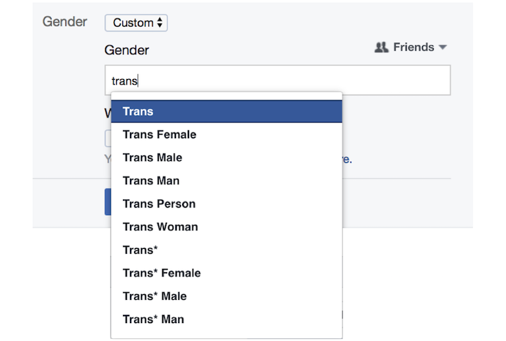

haimson@umich.edu
haimson@umich.edu @oliverhaimson
@oliverhaimson Oliver Haimson
Oliver Haimson Oliver Haimson
Oliver HaimsonGender transition and social media
|
Social computing technologies, such as social media sites, often privilege people who fit within expected and
unchanging categories. Thus, designing technology and social media flexible enough to allow for representation of complex
identities that emerge as people embark on major life transitions, such as changing gender, is a particular challenge.
Because little is known about how transgender people navigate gender transition on social media, this work seeks to understand
challenges and opportunities related to this experience. Examining the relationships between issues including disclosure, self-presentation,
emotional wellbeing, and social support on social media sites for transgender and non-binary users is fundamentally important on its own accord,
but can also inform technology design that will benefit
people who struggle with navigating a wide range of major identity changes online.
Selected PublicationsTumblr was a Trans Technology: The Meaning, Importance, History, and Future of Trans Technologies Oliver L. Haimson, Avery Dame-Griff, Elias Capello, Zahari Richter Feminist Media Studies, published online first October 2019, 17 pages [open-access link] [PDF] [blog]
Mapping Gender Transition Sentiment Patterns via
Social Media Data: Toward Decreasing Transgender Mental Health Disparities
Social Media as Social Transition Machinery
The Social Complexities of Transgender Identity Disclosure on Social Media
Trans Identity and Digital Spaces (part of "A conversation: Queer digital media resources and research")
Digital and Physical Barriers to Changing Identities
Changes in Social Media Affect, Disclosure, and Sociality for a Sample of Transgender
Americans in 2016’s Political Climate
Digital Footprints and Changing Networks During Online Identity Transitions
Online Inspiration and Exploration for Identity Reinvention
User Response to Facebook’s Custom Gender Options
Disclosure, Stress, and Support During Gender Transition on Facebook
 |